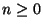
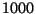

The following code creates the stream of all the squares for  and
prints those of them that are smaller than :
import from MachineInteger, Stream MachineInteger;
s := stream(0, (n:MachineInteger):MachineInteger +-> n^2);
for x in s while x < 1000 repeat { stdout << x << newline; }